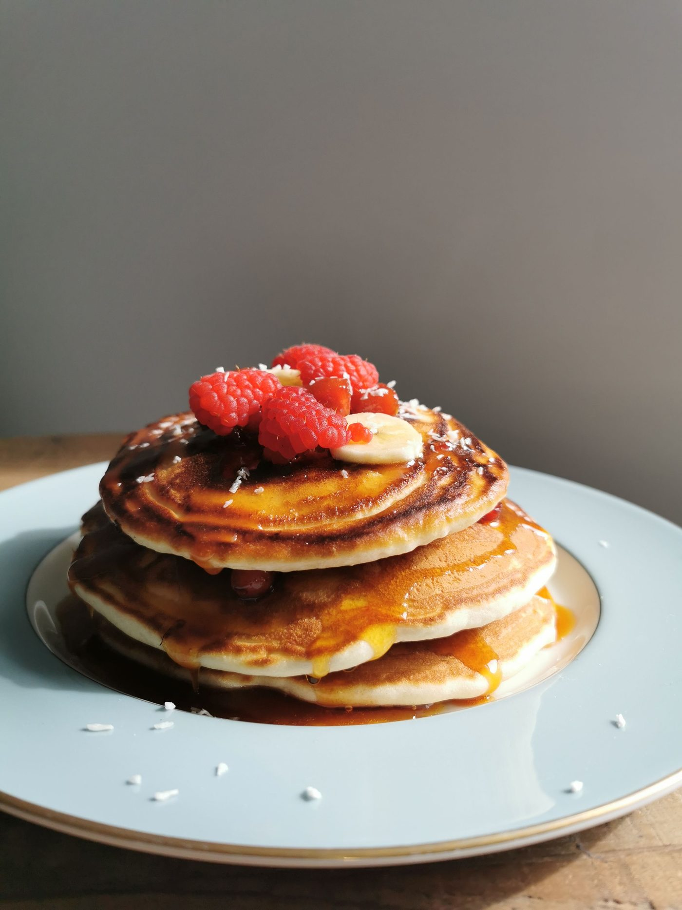
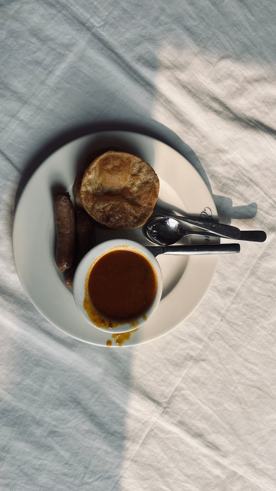

Coffee Cup Restaurant sits at 520 E Cervantes St in Pensacola. The historic Southern diner since 1945 serves breakfast, brunch, and lunch from an open kitchen with a 1945-seasoned griddle, with takeout.


520 E Cervantes St, Pensacola, FL 32501
Monday to Saturday, 6:00 AM to 2:00 PM